Project reportMaking the World Better · Spatial Design
☾ No Gap Night
Hang your mosquito net with no gaps.
Photo of your real bed→Aholo Lux3D→3D net drape→Red gaps→Carpenter size card
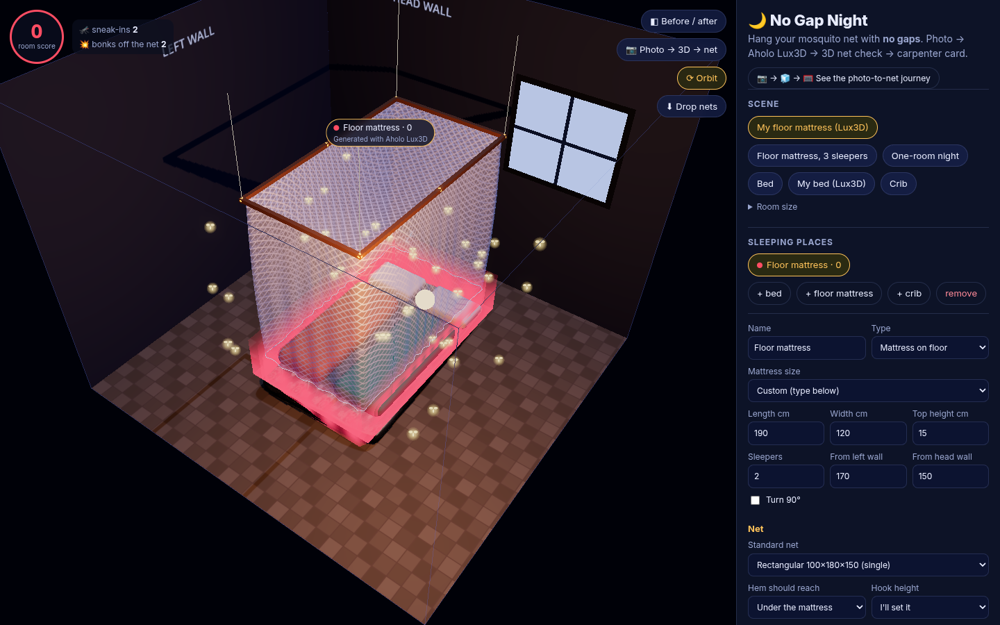
Hero scene. A floor mattress for three, with a standard net that is too small and hung too high. Gaps glow red. Room score: 0. Sleepers are shown as pillow and blanket lumps — never as human figures. The mattress is a real Aholo Lux3D model (“Patterned Mattress”) generated from one phone photo.
Toyyib Muhammed
Solo submission · November 2026
Manycore Aholo Global 3D AI Hackathon
aholo.ai/hackathon
01
The problem
No Gap Night helps families sleep fully protected under a mosquito net. You photograph your real sleeping place (a bed, a mattress on the floor, or a crib), and Aholo Lux3D turns it into a 3D model. The app scales that model to the size you type, drapes a standard mosquito net over it in 3D, shows the gaps where mosquitoes can get in as glowing red, and gives you a simple size card a carpenter can use to build a hanging frame. It is made for the millions of homes worldwide where several people share one room and sleep on floor mattresses that ordinary nets don’t fit.
Idea in one paragraph
A treated net only helps when it is sealed. In real rooms the hem is often hung too high to tuck, the net is narrower than a large mattress, a floor mattress or crib has no net at all, or the netting is pinned against a wall — and mosquitoes can bite through fabric that touches skin. Nobody can see that gap before night falls, and a carpenter needs numbers, not advice.
Hem hung too high
The hook is wherever a nail already is. The hem never reaches the tuck line under the mattress, or the floor, so a band of open air sits around the sleepers.
Net narrower than the mattress
A common 6 × 6 ft (183 × 183 cm) family mattress is wider than many standard nets. The strip of mattress outside the net is an open door.
Floor mattresses and cribs left bare
Advice is written for a single bed on a frame. In many homes the children sleep on the floor, or in a crib, with no net that actually fits.
Nets pressed to a wall
A net shoved against a wall or overlapping another net may look “up,” but skin against netting is still a bite. Tight nets need a flag, not a pass.
02
The solution
No Gap Night turns “hang your net properly” into a picture of your room and a set of numbers a local carpenter can build from today. It is a free static web app. All you need is a phone camera, a Lux3D model of the sleeping place, and a standard long-lasting insecticidal net (LLIN).
See the gap
Glowing red, on your bed
Every opening — a short hem, an uncovered mattress edge, a place with no net — is drawn in bold red, readable even at a small video size.
Score the room
The weakest place wins
Each sleeping place gets a gap score. The room score is the weakest one, because one exposed child is enough. Tips are in plain language.
Hand over numbers
A card for the carpenter
Net W × L × H, hang height, cord length, a cut list, and tie points measured from two walls. Download as PNG or text, or print it.
03
How Aholo Lux3D is used
Lux3D is not a decoration. It is the input that makes the check personal. Without it, No Gap Night would be a generic net calculator. With it, a family sees its own bed, crib or floor mattress — with the headboard, rails or the mat it sits on — and the gap glowing on that object. No scanner and no 3D skills are required: one clear phone photo is enough to get a GLB in minutes.
From photo to net check
01 PHOTO
Photograph the place you sleep
Whole object in frame, even light, a clear three-quarter view. The first image is the main image for materials; one or two extra angles can be added as view references.
02 LUX3D
Generate and download a GLB
In the Lux3D editor, generate the model and export GLB straight away. One model is produced per job.
03 LOAD
Drop the GLB on the 3D view
File picker or drag-and-drop, or a file listed in assets/models/. While it loads, the app shows “Generated with Aholo Lux3D”.
04 SCALE
Type the real size in cm
Length, width and top height. The model is centred, set on the floor, aligned to the mattress length, and scaled to those numbers. Then the net is draped and the gaps are drawn.
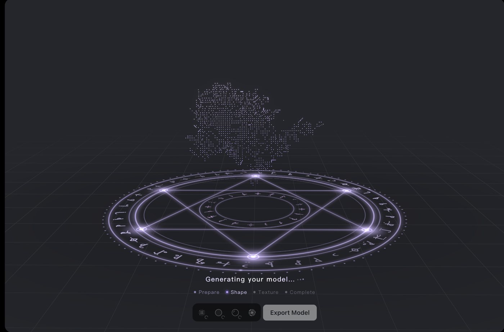
Lux3D generating. The user’s own bed photo becoming a 3D model in the Lux3D editor (Image to 3D, Standard, 300K faces, PBR materials).
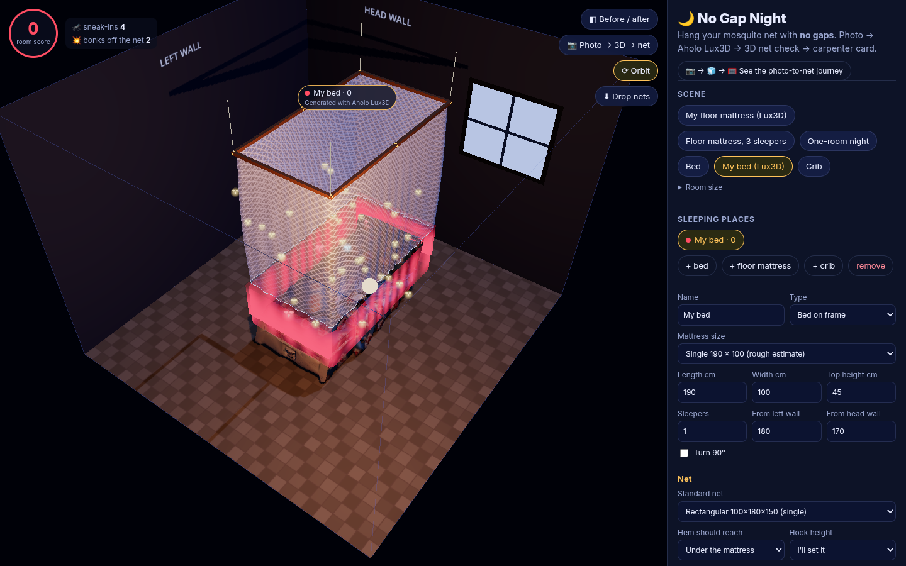
The same bed in the app. “Bed With Bedding” from Lux3D, scaled to its real 3½ ft size, 107 × 190 cm. The net is too small and too high: red gaps, room score 0.
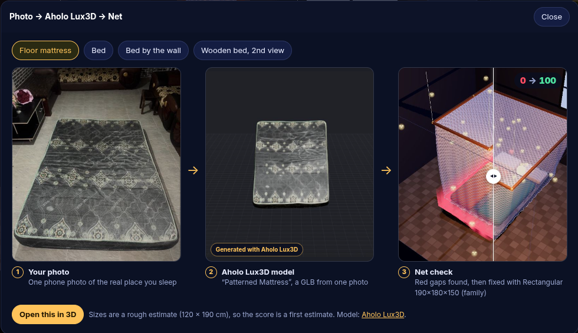
Photo → Lux3D → Net, inside the app. The journey card shows the source photo, the Lux3D model and the netted result side by side, credited “Generated with Aholo Lux3D”. It is driven by assets/models/manifest.json, so each new model adds a tab. Four real models are included: a floor mattress, a single bed, and two Lux3D takes of the same wooden double bed. A Shared room scene places the wooden bed and the floor mattress together.
About scale. Lux3D models are not to scale on their own. No Gap Night never treats the raw mesh as a measured object. The footprint is scaled to the mattress size the user types, and the height is scaled in proportion. The gap check itself uses those typed sizes; the model is there so the family can recognise its own sleeping place.
04
What you can do with it
The built-in one-room night scene is the everyday case the app is built for: a bed, a floor mattress for the children, and a crib, all in one room, each with its own net — or without one.
0
Before — room score 0
The big bed’s hem hangs short and glows red (score 25). The children’s floor mattress has no net at all (score 0). The crib is already sealed (score 100). The room takes the weakest place.
90
After “Fix my room” — 90
One tap picks a net that fits, sets the best hook height, and nudges nets off the walls. The remaining points are an honest flag: the family net is a few centimetres tighter than the 183 × 183 cm mattress.
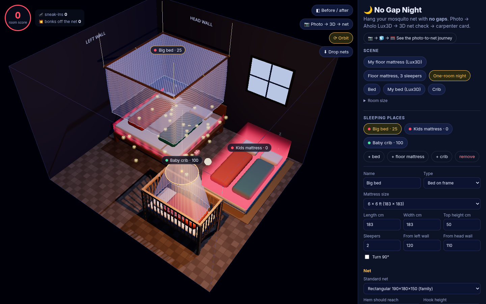
Before. One-room night, room score 0. Red glow on the bed and the uncovered children’s mattress. Cartoon mosquitoes sneak in through the gaps.
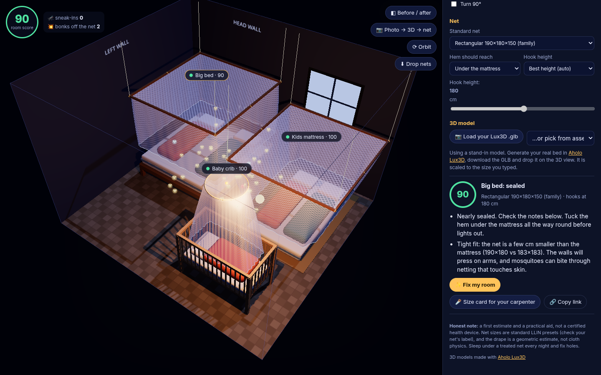
After Fix my room. Nets on every sleeping place, hooks at the recommended height, room score 90. The panel explains the tight-fit leftover in plain language.
Gap check
A red glowing curtain where the hem stops short of the tuck line (under the mattress, or the floor).
Red glowing patches over any part of the mattress that sits outside the net.
A whole red glow over a sleeping place that has no net at all.
Extra flags for tight nets, a low roof, a net running into a wall, and nets that overlap each other.
Fix my room, and a little delight
Fix my room chooses a fitting standard net, computes a hook height, and shifts nets away from walls, then drops the new nets into the scene. Around that, the room is a soft moonlit night: a warm lamp, a bloom on the gaps, an animated net drop, floating “z”s over pillow and wrapper lumps, and cartoon mosquitoes that bonk off a sealed net or sneak through a gap — with a running counter. The camera stays high and can orbit slowly.
04continued
A card a carpenter can build from
The size card is the thing you can take out of the browser and hand to someone with a tape measure. It is labelled a first estimate on the card itself. All sizes are in centimetres. Hook positions are measured from the left wall and the head wall; heights are from the floor.
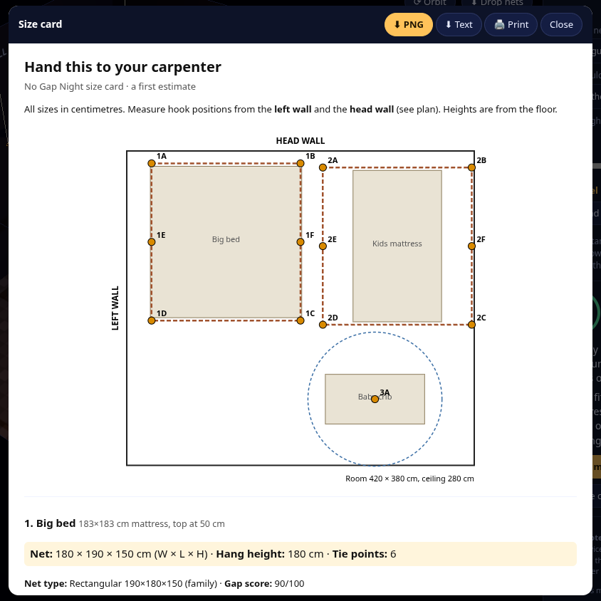
Size card. Plan view of the room, net W × L × H, hang height, and numbered tie points (A–F). Download as PNG or text, or print. This is the one-room scene after Fix my room.
What is on the card
Mattress size and top height for each sleeping place.
Net type and W × L × H (or conical hem, ring and height).
Hang height, and cord length from the ceiling.
Frame inside size and a short cut list (rails and posts, only if a free-standing frame is wanted).
Four to six tie points per rectangular net, plus a single hook for a conical net, with optional mid-side points to stop sag.
The gap score, and the same plain-language notes shown in the app.
Standard nets
Presets follow published LLIN sizes, not made-up measurements. Rectangular: 100 / 130 / 160 × 180 × 150, 190 × 180 × 150, 190 × 180 × 180, and 210 × 190 × 180 cm. Conical: 850 / 1050 / 1250 cm hem (with the matching ring and height). Always check the label on the net you actually have. Sources are listed on page 6.
Beds, floor mattresses and cribs can each take a rectangular or a conical net. Hook height can be set by hand or left on “best height.”
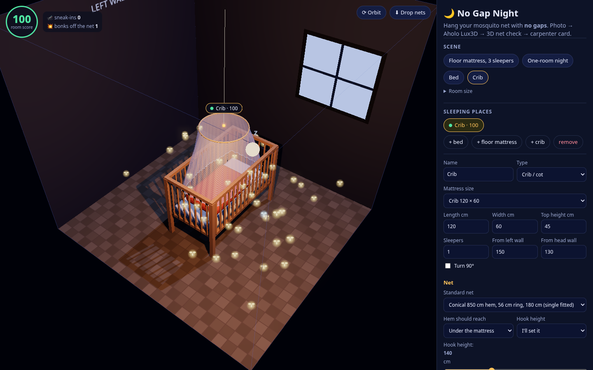
Crib, conical net. 120 × 60 cm crib under a single-fitted conical net (850 cm hem). Room score 100.
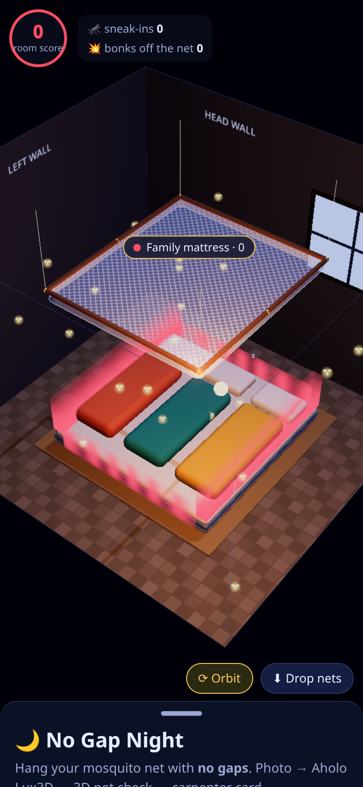
Works on a phone. 3D view fills the screen; controls sit in a bottom sheet.
05
See the difference, share the fix
Three features make the result easy to understand in a few seconds, and easy to pass on to the person who will hang the net.
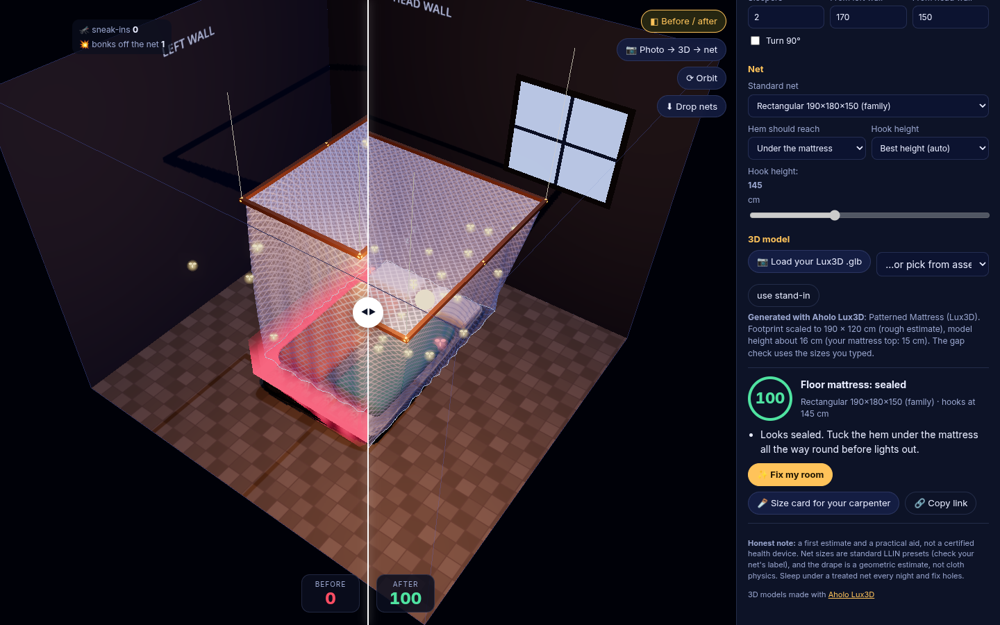
Before / after wipe. One tap runs Fix my room and opens a split screen: the room as it was on the left (red gaps, score 0), the fixed room on the right (score 100). Both halves are live 3D with their own mosquitoes; drag the handle, or use the arrow keys. It still reads clearly at 480p.
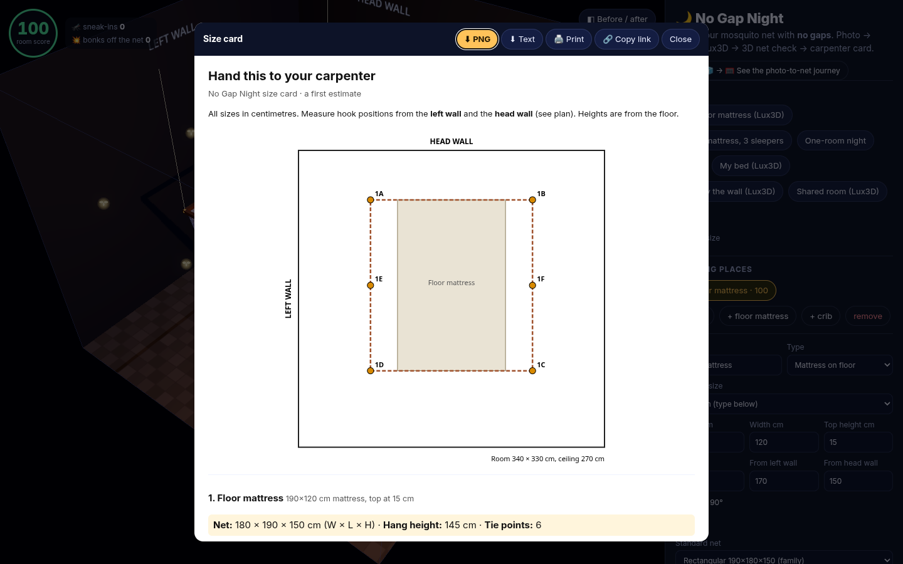
Share link. “Copy link” stores the whole room in the address (room size, every sleeping place, net, hook height and which Lux3D model it uses). Opening it restores the scene and, from the size card, opens the card too. Nothing is uploaded; the link is the data.
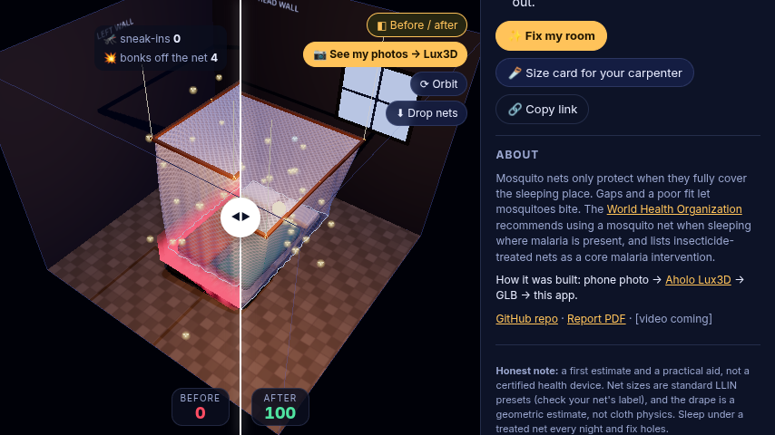
Made for small screens and video. The wipe, the score badges and the controls stay readable at 480p, and the controls fold into a bottom sheet on phones.
A guided first view
A short title intro: the camera glides down into the moonlit room.
A three-step hint: pick a sleeping place, look for red, tap Fix my room. Each step ticks off as you do it, then the hint gets out of the way.
Choosing a sleeping place moves the camera smoothly to it.
Honest by design
Scores are always called a first estimate, sizes typed for a Lux3D model are labelled a rough estimate, and the app never claims to be a certified device. Adding ?clean to the address hides the intro and hints for a clean screen recording.
06
How it is built
No Gap Night is a static three.js web app. There is no build step, no bundler and no back-end. Any static file server can host it — including GitHub Pages (Jekyll is turned off). Opening index.html from disk (file://) will not load ES modules in most browsers; a local server is enough:
cd nogapnight && python3 -m http.server 8000 # then open http://localhost:8000
Rendering
three.js r170
Loaded from jsDelivr through a pinned import map (three@0.170.0). GLTFLoader brings in the Lux3D GLB; OrbitControls moves the camera, which is kept above the room. The first visit needs internet for the library.
The net
A geometric drape
The net is a parametric mesh — straight walls with a little sag and a few folds — not a cloth simulation. That keeps the app light enough for a phone, and the gaps large and readable.
Stand-ins
Until a GLB arrives
Procedural bed, floor-mattress and crib models fill the scene so the gap check can be used immediately. Drop in a Lux3D GLB whenever it is ready.
07
How the gap check works
All measurements are in centimetres. This is a first estimate. The diagrams and the score use the sizes you type, together with a simple geometric model of the net.
Tuck line = mattress top − 15 cm (hem tucked under the mattress), or the floor.
Rectangular net · hem height = hook height − net height.
Gap = hem height − tuck line, if that is positive.
If the net is more than 5 cm smaller than the mattress, the strip outside it is a gap; up to 5 cm is flagged as “tight.”
Suggested hook height = tuck line + net height − 5.
Conical net · the ring hangs at the hook. The hem can reach out
ring/2 + sqrt(height² − drop²), but never more than hem circumference / (2 × pi).
Every mattress corner must sit inside that reach. If the drop is greater than the net height, the hem hangs short of the tuck line.
The score starts at 100 and loses points for hem gaps (25 + 2 per cm), an uncovered mattress (30 + 1 per cm), tight nets, a low roof, walls and overlaps. The room score is the lowest place score.
Net size sources
Presets are taken from published LLIN labels and a regional draft standard, cited so the sizes can be checked. This project does not speak for those organisations, and it is not a certified product.
WHO Prequalification, Declaration of Labelling, DCT Royal Guard LLIN — rectangular 70–190 × 180 × 150–180; conical 1050 × 56 × 220, 1250 × 65 × 250, 1350 × 75 × 250 cm. WHO PQ WHOPAR-VC_003-003
WHO PQ, Declaration of Labelling, UNET G1 LN — 190 × 180 × 150, 160 × 180 × 150 and others; conical 850 × 56 × 220, 1050 × 56 × 220, 1250 × 65 × 250. WHO PQ P-13227 part 8
WHO PQ, Declaration of Labelling, GreenNet — 190 × 180 × 150/160/180, 210 × 190 × 180; conical 1250 × 65 × 250. WHO PQ p-00320 part 8
Draft East African Standard DEAS 455:2021 (LLIN), tables 5 and 6 — single fitted conical 850 / 180 / 56 cm ring; double 1050 / 220 / 56; extra double 1250 / 250 / 65. DEAS 455:2021
Four real Lux3D models went into the app, each from a phone photo of the author’s own room. This page compares the two takes of the wooden bed, the raw export against the web copy used in the live app, and the original tilted mesh against the levelled model the net is draped over.
Two Lux3D takes of the same wooden bed
Take 1, photo. Higher three-quarter view of the whole bed.
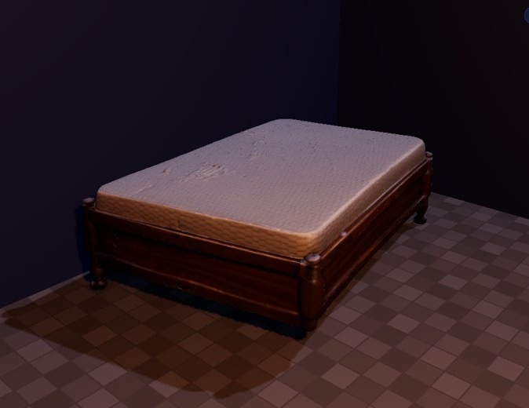
Take 1, in the app. Same camera as take 2, no net.
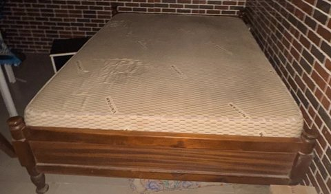
Take 2, photo. Closer, lower view over the footboard.
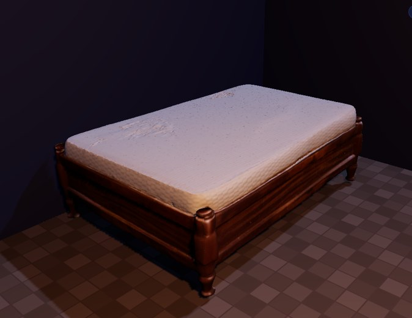
Take 2, in the app. Same angle, same placement.
What changed. Both jobs are the same wooden double bed with corner posts, tight in a brick corner. Take 1 (18.1 MB, 274,850 triangles) reconstructs a cleaner mattress pattern from the wider shot and is the model used in “Bed by the wall” and the Shared room. Take 2 (16.7 MB, 272,304 triangles) is from the closer footboard photo: the silhouette matches, the bounds are within about 1%, but the texture is noisier and a brown patch is baked onto the mattress. The second take is kept as its own journey tab so the two reconstructions can be compared. Neither export was used raw: each was levelled with a PCA fit (only about 1° of tilt) and reduced to a ~2.6 MB web copy.
Raw Lux3D export vs the web copy
Model
Raw export
Triangles
Web copy
Triangles
Floor mattress Patterned Mattress
16.3 MB
266,988
2.5 MB
80,094
Single bed Bed With Bedding
26.8 MB
484,286
4.1 MB
112,912
Wooden bed, take 1
18.1 MB
274,850
2.6 MB
82,454
Wooden bed, take 2
16.7 MB
272,304
2.6 MB
81,690
Web copies keep the original GLB in the repo (not loaded at runtime). Each web file is simplified, quantized, and saved with a 1024 px JPEG base colour and a 512 px metal/roughness map (1024 px on the single bed) so the live app stays light enough for a phone.
Original tilted export vs levelled in the app
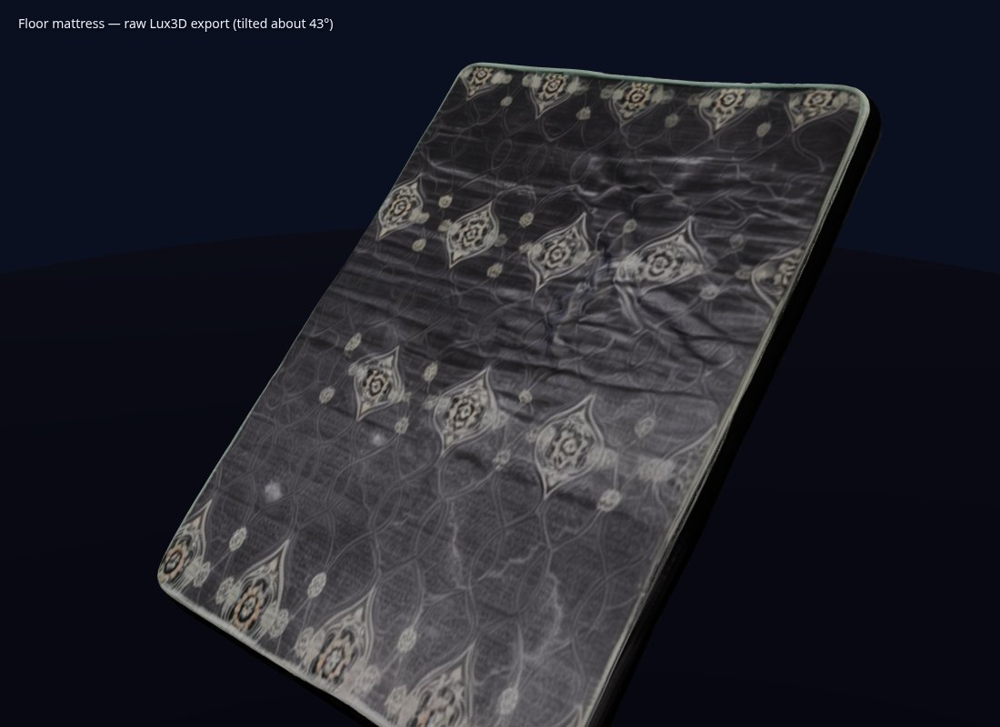
Raw export. The floor mattress arrives tilted about 43° in its own frame, not sitting on the ground plane.
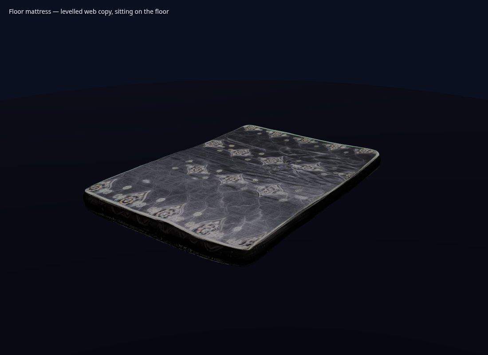
Levelled web copy. A PCA fit stands it on y = 0 with the long side toward the head wall, then the mesh is simplified for the web.
The same step was applied to every model. The single bed was tilted about 18°. Both wooden-bed takes were already nearly level (about 1°) and only needed to be sat on the floor and aligned. The gap check still uses the typed mattress size, not the mesh.
09
Honest limits
No Gap Night is a practical aid and a wellness tool. It is a first estimate, not a certified health device, and it is not medical advice. Sleep under a treated net every night, and mend holes.
A geometric net, not cloth physics
The drape is parametric — straight walls with sag and folds. It will not show how real fabric clings, stretches, or is pinned under a pillow. Gaps are drawn large on purpose, so they stay readable in a short demo, including at 480p.
The gap check uses the sizes you type
The GLB is for recognising your real bed. Lux3D models are not to scale, so the footprint is scaled to the typed mattress size and the height is scaled proportionally. If the typed numbers are wrong, the check will be wrong.
It assumes a sound, square hang
The check assumes the net is intact, hung square, centred over the mattress, and tucked in. It cannot see holes, torn hems, or a net that has slipped in the night.
The room is a simple box
Only a left wall, a head wall and a ceiling height are modelled. Wardrobes, fans, windows that a net might snag on, and any furniture that is not a sleeping place are left out.
10
Where this could go next
Add a Lux3D crib model, so all three everyday sleeping places are the family’s own.
A QR code on the printed size card that opens the same shared room on a phone.
Bundle three.js so the app can run after the first visit even without a network, and stay usable in low-connectivity homes.
Optional furniture that a net might catch on (a fan, a wardrobe, a window bar).
A print-at-scale plan of the size card, and a local-language pass of the labels and tips.
A slightly richer conical drape if it can stay light enough for a phone. Still a first estimate, not a cloth solver.
Credits. 3D models generated with Aholo Lux3D (Manycore). Rendering with three.js (MIT). Screenshots in this report were captured from the running app. The floor mattress, the single bed and both takes of the wooden bed are real Lux3D models generated from the author’s own photos; the one-room night and crib scenes use procedural stand-in models.
Author. Toyyib Muhammed, solo.
This is a first estimate and a practical aid, not a certified health device. Net sizes are standard LLIN presets; check the label on your own net. The drape is a geometric estimate, not cloth physics.